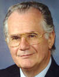

International Scientific Programme Committee
Angelo Azzi
Angelo Azzi obtained an M.D. at the University of Padua, Italy (1963), where he continued as Assistant Professor (1963-1966) After a postdoctoral training in the Department of Biophysics University of Pennsylvania (1967-1969) he returned to Padua where he obtained a PhD in Pathophysiology (1969) and in Biochemistry (1970) followed by an appointment as Associate Professor (1970-1975) and Full Professor (1976-1977). He moved then to Bern (Switzerland) as Professor & Head of Department, Medical Chemistry Institute, University of Bern (1977-1984) and later Professor and Director of the Institute for Biochemistry and Molecular Biology (1984-2005). He moved to Boston (USA) wher he was first a Visiting Scientist (2005) and later a Senior Scientist (2006-).of the HNCRA at Tufts University. In his research he published ~400 articles and was invited speaker at ~200 international meetings. He has carried out research on mitochondria; cytochromes; membranes; transporters; protein kinase C and signal transduction; the molecular function of tocopherols and carotenoids. He has been involved in a number of editorial activities such as Editor-in-Chief IUBMB Life; Editor-in-Chief Molecular Aspects of Medicine; Review Editor BioFactors. As member of International Organizations it is worth mentioning his membership in the Advisory committee Danone Foundation (1990-1999); the Chair of the Scientific Council -Warsaw International Institute of Cell and Molecular Biology (1997-2007); the Chair of UNESCO-MCBN (1991-2001); the Membership in ISAB (Intl. scientific advisory board of UNESCO) (1997-today). He has been also Member of the IUBMB executive committee and Chair of the Publication Committee (1997-2006); President International Society of Vitamins and Related Biofactors (2007-2008); President of MCBN (Global Network for Cell and Molecular Biology), NGO, Geneva (2001-2008); President (1999-2000) European Society for Free Radical Research and Member of the council (1996-2000); Secretary General Society for Free Radical Research International and Member of the Council and President (2003-2010); Member of the Jury of the L'Oréal-UNESCO Price "Women in Science" (1996-2003); President of the 13th Congress SFRRI- Davos (Switzerland) 2006; President of the IUBMB (2007-today). Among the awards he received there are the Foreign membership of the Polish Academy of Sciences (1994); Corresponding Membership of the Nordrhein-Westfälischen Akademie der Wissenschaften (1999); the PhD h. c., University of Buenos Aires (2001) , the Oxygen Club of California Award (2001); and the Vitamin Preis, Gesellschaft für angewandte Vitaminforschung (2002).
« Go Back